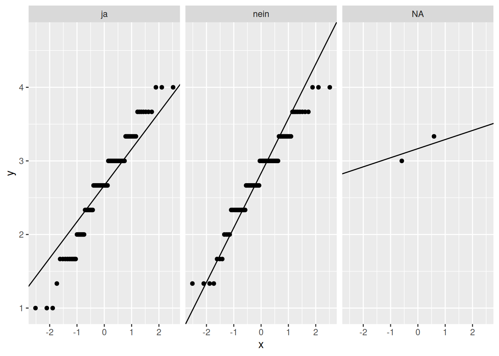

load(url("http://www.beltz.de/fileadmin/beltz/downloads/
OnlinematerialienPVU/R_fuer_Einsteiger/erstis.rda"))
# Zeilenumbruch zwischen der ersten und zweiten Zeile noch entfernen!29 Outputs - ALM - FAQ
Das Allgemeine Lineare Modell (ALM) umfasst verschiedene inferenzstatistische und varianzanalytische Verfahren, darunter \(t\)-Test (t.test()), ANOVA (aov()) und lineare Regression (lm()).
Im Folgenden schauen wir uns an, wie die Outputs der jeweiligen Funktionen t.test(), aov() und lm() aufgebaut sind und wie diese interpretiert werden. Dafür nutzen wir jeweils dieselben zwei Variablen. Wir werden zudem vor der Durchführung der Methoden deren Annahmen prüfen. Abschließend beschäftigen wir uns mit den Gemeinsamkeiten der Verfahren (für unseren speziellen Fall von einer metrischen abhängigen Variablen und einer kategorialen unabhängigen Variablen).
Beispieldatensatz für dieses Kapitel
Wir schauen uns im folgenden den Datensatz erstis an. Dieser enthalt Daten aus einer Erhebung mit Erstsemesterstudierenden der Psychologie. Das zugehörige Codebook finden wir hier.
Den Datensatz laden wir mit der load()-Funktion in unsere Environment:
Wir wollen untersuchen, ob sich das Vorhandenseins eines Nebenjobs (job) auf die Zufriedenheit mit der Bewältigung von Studienbelastungen (zf_belastung, erster Messzeitpunkt) auswirkt.
Dazu speichern wir beide Variablen in einem neuen Datensatz.
# Daten aus erstis in neuem Dataframe speichern und umbennenen
daten <- data.frame(job = erstis$job, zf_belastung = erstis$zuf.bel.1)Wir müssen außerdem noch überprüfen, ob die Variablen entsprechend ihres Messniveaus kodiert sind:
str(daten)'data.frame': 191 obs. of 2 variables:
$ job : Factor w/ 2 levels "ja","nein": 2 1 1 2 2 1 NA NA NA 2 ...
$ zf_belastung: num 1.33 2.67 3.67 2.33 NA ...Wie erhofft liegt die nominalskalierte Variable job als ungeordneter Faktor und die intervallskalierte Variable zf_belastung als numeric vor.
Mehr Informationen zu Datentypen und angemessener Kodierung finden wir im Kapitel Einführung in R.
29.1 \(t\)-Test
Der \(t\)-Test untersucht, ob es signifikante Mittelwertsunterschiede in der Population hinsichtlich einer metrischen Variablen gibt. Der Begriff umfasst eine Gruppe von Hypothesentests, darunter den \(t\)-Test für unabhängige Stichproben und den \(t\)-Test für abhängige Stichproben (Beobachtungspaare).
In unserem Beispiel schauen wir, ob sich Personen mit und ohne Nebenjob (job) hinsichtlich der Zufriedenheit mit der Bewältigung von Studienbelastungen (zf_belastung) unterscheiden.
Weil es sich bei Studierenden mit und ohne Nebenjob um zwei voneinander unabhängige Stichproben (d.h. unterschiedliche Personen) handelt, verwenden wir den \(t\)-Test für unabhängige Stichproben.
Überprüfung der Annahmen des \(t\)-Tests
Achtung: An dieser Stelle sei wieder auf das ausführliche Skript zur Annahmenprüfung verwiesen. Im Folgenden schauen wir uns jeweils nur ein mögliches Verfahren zur Überprüfung der spezifischen Annahmen an.
Zur Durchführung eines \(t\)-Tests für unabhängige Zufallsstichproben müssen folgende Annahmen erfüllt sein:
- es muss sich um einfache, voneinander unabhängige Stichproben handeln
- Normalverteilung des untersuchten Merkmals in beiden Populationen
- Varianzhomogenität des untersuchten Merkmals in beiden Populationen
Normalverteilung
Schauen wir uns dazu jeweils für beide Gruppen von job einen QQ-Plot an.
library(ggplot2)
ggplot(data = daten, aes(sample = zf_belastung)) + # Koordinatensystem
stat_qq() + stat_qq_line() + # QQ-Plot + Hilfslinie
facet_grid(~ job) # einzelne Plots nach den Ausprägungen von job
# die Kategorie NA fasst die fehlenden Werte auf der Variablen job zusammen
# diese können wir hier unbeachtet lassenMehr Informationen zum Erstellen von Grafiken mit dem Paket ggplot2 finden wir im Kapitel zu Grafiken.
Achtung: Hilfe zur Interpretation von QQ-Plots finden wir hier: Section 28.5.1.
Hinweis: Die Residuen in der linearen Regression sind beim \(t\)-Test dasselbe wie in den Gruppen zentrierte Werte der \(AV\) (d.h. Abweichungen vom gruppenspezifischen Mittelwert) in unserem Beispiel.
In beiden Diagrammen weichen die Punkte leicht von der Linie ab, d.h. dass die Daten nicht perfekt normalverteilt sind. Wir können uns aber auf den zentralen Grenzwertsatz stützen, welcher besagt, dass der Mittelwert eines Merkmals bei wachsender Stichprobengröße approximativ normalverteilt ist. Generell gibt es keinen Richtwert, der besagt, wann Stichproben hinreichend groß sind. Mit unseren Stichprobengrößen (\(n_{ja} = 87\) und \(n_{nein} = 86\)) und den geringfügigen Abweichungen von einer Normalverteilung in den beiden Gruppen können wir erwarten, dass die Annahme hinreichend erfüllt ist.
Varianzhomogenität
Varianzhomogenität bedeutet, dass die Varianzen in den untersuchten Populationen gleich sind. Wenn dies der Fall ist, sollten sich auch die Stichprobenvarianzen ähneln.
Ist diese Annahme nicht erfüllt, müssen wir auf robustere Methoden, z.B. den Welch’s \(t\)-Test für unabhängige Stichproben, zurückgreifen.
Zur Überprüfung der Varianzhomogenität können wir beispielsweise den Levene Test nutzen. In diesem wird die Nullhypothese überprüft, dass die Populationsvarianzen homogen sind (\(\sigma^2_{ja} = \sigma^2_{nein}\)). Weil die \(H_0\) die Wunschhypothese ist, ist es von größerer Relevanz, diese nicht fälschlicherweise abzulehnen, d.h. einen \(\beta\)-Fehler zu machen (relativ gesehen zum \(\alpha\)-Fehler). Wir können das Risiko für einen \(\beta\)-Fehler nur indirekt kontrollieren, indem wir das \(\alpha\)-Level erhöhen. Daher legen wir unser Signifikanzniveau auf \(\alpha=.20\) (zweiseitig) fest.
Wir führen den Test mit der Funktion leveneTest() aus dem Paket car durch.
library(car)
leveneTest(zf_belastung ~ job, daten)Levene's Test for Homogeneity of Variance (center = median)
Df F value Pr(>F)
group 1 0.807 0.3703
167 Da der \(p\)-Wert (Pr(>F)) größer als unser \(\alpha\)-Level ist, können wir die \(H_0\) beibehalten.
Nachdem die Annahmen weitgehend erfüllt erscheinen, können wir den \(t\)-Test für unabhängige Stichproben anwenden.
Mit der Funktion t.test() aus dem Basispaket stats können unterschiedliche Arten von \(t\)-Tests durchgeführt werden. Welches Verfahren verwendet werden soll, legen wir mit den Parametern paired und var.equal fest.
Mit
pairedspezifizieren wir, ob eine Abhängigkeit der Stichproben besteht.TRUEzu einem \(t\)-Test für Beobachtungspaare,FALSEführt zur Durchführung eines \(t\)-Tests für unabhängige Stichproben.Mit
var.equalspezifizieren wir, ob Varianzhomogenität vorliegt. Wenn die Annahme nicht erfüllt ist, legen wir mitFALSEfest, dass der Welch’s \(t\)-Test durchgeführt werden soll.
Wir wollen einen ungerichteten \(t\)-Test für unabhängige Stichproben durchführen und legen unser Signifikanzlevel \(\alpha=.05\) fest.
t.test(formula = zf_belastung ~ job,
data = daten,
paired = FALSE, # unabhängige SP
var.equal = TRUE, # Annahme Varianzhomogenität erfüllt
alternative ="two.sided", # zweiseitige (ungerichtete) Testung
na.action = "na.exclude") # Ausschluss fehlender Werte
Wir erhalten u.a. folgende Informationen:
-
t: empirische Prüfgröße des \(t\)-Tests -
df: Anzahl der Freiheitsgerade der \(t\)-Verteilung (entspricht \(N-2\))
Wie kommen wir auf \(N=169\)?
Wir haben alle Fälle mit fehlenden Werten auf einer der beiden Variablen ausgeschlossen (casewise deletion durch na.action = "na.exclude"). Wir können diese Bedingung folgendermaßen auf unseren Datensatz anwenden, um \(N\) für unsere spezifische Analyse zu berechnen:
nrow(daten[!is.na(daten$job) & !is.na(daten$zf_belastung),])[1] 169Für mehr Informationen siehe das Kapitel zu Fehlenden Werten.
-
p-value: in \(p\)-Wert umgerechneter empirischer \(t\)-Wert
Durch den Vergleich mit unserem \(\alpha\)-Niveau können wir anhand dieser Information zu einer Testentscheidung gelangen. Ist der \(p\)-Wert kleiner als \(\alpha\), verwerfen wir die \(H_0\). -
95 percent confidence interval: obere und untere Grenze des 95% Konfidenzintervalls der Mittelwertsdifferenz -
sample estimates: Stichprobenmittelwerte der Gruppen
Durch Betrachtung des \(p\)-Wertes stellen wir fest, dass die Wahrscheinlichkeit unter Gültigkeit der \(H_O\), einen empirischen \(t\)-Wert von \(\mid -1.278 \mid\) oder extremer zu erhalten, bei 20.3% liegt. Da dieser \(p\)-Wert deutlich über \(\alpha=.05\) liegt, behalten wir die Nullhypothese bei. Wir gehen davon aus, dass Studierende mit und ohne Nebenjob sich nicht statistisch signifikant in ihrer Zufriedenheit mit der Bewältigung von Studienbelastungen unterscheiden.
29.2 Lineare Regression
Die lineare Regression ermöglicht es, eine abhängige Variable (AV, Kriterium) durch eine oder mehrere unabhängige Variablen (UVs, Prädiktoren) vorherzusagen. Das Kriterium muss metrisch sein, wohingegen die Prädiktoren auch kategorial sein können, wenn sie adäquat kodiert sind (siehe z.B. Indikatorvariablen: Kodierung nominaler Merkmale im Kapitel Datenvorbereitung).
Wir führen eine einfache lineare Regression durch, in der wir die Zufriedenheit mit der Bewältigung von Studienbelastungen (zf_belastung) auf das Vorhandensein eines Nebenjobs (job) zurückführen.
Wir legen unser Signifikanzlevel auf \(\alpha=.05\) fest.
Bei der linearen Regression ist die sogenannte Residualdiagnostik ein essentieller Teil der Annahmenprüfung. Allerdings müssen wir dafür die Regression bereits durchgeführt haben. Wir können die Annahmenprüfung also erst nach der Regression machen.
Mit der Funktion lm() aus dem Basispaket stats können wir eine lineare Regression durchführen.
lm_belastung <- lm(formula = zf_belastung ~ job,
data = daten,
na.action = "na.exclude") # Ausschluss fehlender WerteMehr Informationen zum Umgang mit fehlenden Werten finden wir im Kapitel Fehlende Werte.
Das Ergebnisobjekt lm_belastung schauen wir uns erst nach der Annahmenprüfung an.
Überprüfung der Annahmen der (einfachen) linearen Regression
Achtung: Im Rahmen dieses Kapitels besprechen wir die Annahmen und deren Überprüfung nicht im Detail. Mehr Informationen finden wir im Kapitel zur Prüfung der Annahmen der multiplen linearen Regression, die denen der einfachen linearen Regression sehr ähnlich ist.
Folgende vier Annahmen sind bei der einfachen linearen Regression mit der inferenzstatistischen Absicherung verbunden:
- Linearität
- Homoskedastizität
- Normalverteilung der Residuen
- Unabhängigkeit der Residuen
Linearität
Die Abhängigkeit zwischen Erwartungswert des Kriteriums und Prädiktor ist linear.
Diese Annahme lässt sich mittels eines Residualplots untersuchen. Dieser plottet die vorhergesagten Kriteriumswerte \(\hat y_i\) gegen die Residuen \(\hat e_i\).
plot(lm_belastung, which=1)
Weil wir nur eine kategoriale \(UV\) mit zwei Ausprägungen haben, ordnen sich die Punkte in zwei vertikalen Linien an.
Da sich die Lowess Fit Line (rote gestrichelte Linie), welche den generellen (nonparametrischen) Trend der Daten beschreibt, dem Erwartungswert der Residuen bei \(y=0\) (schwarze gestrichelten Linie) annähert, können wir annehmen, dass Linearität vorliegt.
Mehr Informationen zur Lowess Fit Line und zum Residuenplot finden wir im Kapitel zur Prüfung der Annahmen der multiplen linearen Regression.
Homoskedastizität
Die Varianz der \(y\)-Werte, die an einer bestimmten Stelle des Prädiktors vorliegt, ist für alle Prädiktorwerte gleich (Varianzhomogenität).
Diese haben wir bereits im Abschnitt zum \(t\)-Test mittels des Levene-Tests überprüft.
Den Residualplot, den wir gerade zur Überprüfung der Annahme der Linearität genutzt haben, können wir auch zur Überprüfung der Annahme der Homoskedatizität nutzen. Weil die Residuen sich ohne erkennbares Muster um den Erwartungswert der Residuen bei \(y=0\) (schwarze gestrichelten Linie) verteilen, nehmen wir Homoskedastizität an.
Normalverteilung der Residuen
Die Verteilung der \(y\)-Werte an einer bestimmten Stelle der \(UV\) ist eine Normalverteilung.
Eine Verletzung dieser Annahme ist eher in kleineren Stichproben problematisch. In großen Stichproben sind die Regressionskoeffizienten aufgrund des zentralen Grenzwertsatzes selbst dann asymptotisch normalverteilt, wenn die Annahme nicht erfüllt ist. Es gibt jedoch keinen Richtwert, ab wann eine Stichprobe als hinreichend groß gilt. Wir sollten die Annahme immer überprüfen. Dazu schauen wir uns einen QQ-Plot der Residuen an.
plot(lm_belastung, which=2)
Unser Kriterium Zufriedenheit mit der Bewältigung von Studienbelastungen scheint in Abhängigkeit der Gruppenzugehörigkeit leicht von einer Normalverteilung abzuweichen. Die Größe unserer Stichprobe, \(N = 169\), legt nahe, dass (nach dem zentralen Grenzwertsatz) die Regressionskoeffizienten approximativ normalverteilt sind und der Standardfehler der Steigung nicht verzerrt ist.
Unabhängigkeit der Residuen
Die Höhe des Residuums einer Beobachtung ist unabhängig von der Höhe des Residuums einer anderen Beobachtung.
Serielle Abhängigkeit, d.h. mehrere Messungen von einer Person, können wir ausschließen, da es sich nicht um ein Messwiederholungs-Design handelt.
Zur Überprüfung auf Clustering, d.h. systematische Zusammenhänge zwischen Personen einer Gruppe, müssten wir im Verdacht stehende (erhobene) Gruppenvariablen begutachten. Da dies aber den Rahmen dieses Kapitels sprengen würde, lassen wir das außen vor.
Da wir keine Hinweise auf Verletzung der Annahmen gefunden haben, schauen wir uns nun die Ergebnisse der einfachen linearen Regression an.
Wir schauen uns die Ergebnis unseres Regressionsmodells mittels summary() an:
summary(lm_belastung)
Der Output sagt uns, inwiefern wir Zufriedenheit mit der Bewältigung von Studienbelastungen mit dem Vorliegen eines Nebenjobs vorhersagen können.
Wir bekommen Auskunft über:
- die Signifikanztests der geschätzten Populationskoeffizienten \(\hat b_0\) und \(\hat b_1 ... \hat b_k\) (unserer \(k\) Prädiktoren)
- den Signifikanztest der insgesamt aufgeklärten Varianz des gesamten Regressionsmodells \(R^2\)
In unserem Fall einer einfachen linearen Regression sind die Ergebnisse der Signifikanztestung von Schätzung der Steigung und Schätzung der Varianzaufklärung des Gesamtmodells identisch.
Unter Coefficients finden wir Informationen zu den geschätzten Regressionskoeffizienten - Intercept und Steigungskoeffizient(en):

-
Estimate: Schätzung der (Populations-)Regressionskoeffizienten(Intercept): vorhergesagter Wert des Kriteriums wenn alle Prädiktoren 0 sind (bei metrischen Prädiktoren) bzw. vorhergesagter Wert des Kriteriums in den jeweiligen Referenzgruppen (bei kategorialen Prädiktoren); Wert vonzf_belastungin der Referenzgruppejob == jajobnein: Steigungskoeffizient, der die erwartete Veränderung im Kriterium angibt, wenn der Prädiktor um eine Einheit erhöht wird (bei metrischen Prädiktoren) bzw. in (einer) der Vergleichsgruppen (bei kategorialen Prädiktoren); Unterschied vonjob == neinim Vergleich zur Referenzgruppejob == jaim Hinblick aufzf_belastung
-
Std.Error: Standardfehler des Regressionskoeffizienten -
t.value: empirischer \(t\)-Wert für die Signifikanztestung des (partiellen) Regressionskoeffizienten -
Pr(>|t|): in \(p\)-Wert umgerechneter empirischer \(t\)-Wert -
Sign.codes: durch Sternchen gekennzeichnete Signifikanzniveaus der geschätzten Regressionskoeffizienten
Der Intercept \(b_0 = 2.679\) gibt uns den Mittelwert der Personen mit Nebenjob (job == "ja", Referenzgruppe) auf der Skala von Zufriedenheit mit der Bewältigung von Studienbelastungen (zf_belastung) an. Wir gelangen durch Betrachtung von \(p < 2^{-16}\) zu der Testentscheidung, die \(H_0\), dass der Intercept in der Population 0 ist, abzulehnen.
Der Steigungskoeffizient \(b_1 = 0.131\) sagt uns, dass Personen ohne Nebenjob (job == "nein") sich im Mittel 0.131 Punkte höher auf der Skala von Zufriedenheit mit der Bewältigung von Studienbelastungen (zf_belastung) beschreiben. Zudem gelangen wir durch Betrachtung von \(p = 0.203\) zu der Testentscheidung, die \(H_0\), dass der Populationskoeffizient \(\beta_1 = 0\) ist, beizubehalten.
Im unteren Abschnitt finden wir Informationen bezüglich des Gesamtmodells:

-
Residual Standard Error: Standardschätzfehler \(s_e\)
Gütemaß für die Genauigkeit der Regressionsvorhersage -
Multiple R-squared: Determinationskoeffizient \(R^2\)
Gütemaß für die Schätzgenauigkeit -
Adjusted R squared: korrigierter Determinationskoeffizient \(R_{korr}^2\); gilt durch Korrektur der Freiheitsgrade als erwartungstreuer Schätzer für die Population -
F-statistic: empirischer Wert des \(F\)-Tests des Determinationskoeffizienten \(R^2\) (d.h. des Gesamtmodells) mit Anzahl der Zähler- (\(k\)) und Nenner-Freiheitsgrade (\(N-k-1\)) der \(F\)-Verteilung mit zugehörigem \(p\)-Wert.
Der Determinationskoeffizienten \(R^2 = 0.009685\) sagt aus, dass in unserer Stichprobe knapp 1% der Variation in der Zufriedenheit mit der Bewältigung von Studienbelastungen (zf_belastung) durch das Vorhandensein eines Nebenjobs (job) erklärt werden kann. Wir können die \(H_0\), dass der Determinationskoeffizient in der Population \(0\) ist (\(\rho^2 = 0\)), durch Betrachtung von \(p = 0.203\) beibehalten.
29.3 ANOVA
Eine ANOVA (Analysis of Variance) überprüft den Einfluss von einer bzw. mehreren kategorialen unabhängigen Variablen (UVs, Faktoren) mit \(p\) Faktorstufen auf eine metrische abhängige Variable (AV). Dazu wird eine Varianzdekomposition durchgeführt, welche die Gesamtvarianz in systematische und Fehlervarianz zerlegt.
Wir wollen in unserem Beispiel überprüfen inwiefern Unterschiede in der Zufriedenheit mit der Bewältigung von Studienbelastungen (zf_belastung) auf das Vorhandensein eines Nebenjobs (job) zurückzuführen ist.
Wir haben ein minimal unbalanciertes Design, weil die Anzahl der Beobachtungen in den Faktorstufen von job sich geringfügig unterscheiden mit \(n_{ja} = 87\) und \(n_{nein} = 86\).
Unser Signifikanzlevel legen wir auf \(\alpha=.05\) fest.
Überprüfung der Annahmen der ANOVA
Vor der Durchführung der ANOVA mit unseren Beispieldaten müssen wir zwei Annahmen prüfen:
- Normalverteilung des untersuchten Merkmals in beiden Populationen
- Homoskedastizität des untersuchten Merkmals in beiden Populationen
Beides haben wir im Rahmen der Durchführung des \(t\)-Test bereits untersucht und Evidenz dafür gefunden.
Zur Durchführung der ANOVA verwenden wir die aov()Funktion.
anova <- aov(zf_belastung ~ job,
data = daten,
na.action = "na.exclude") # Ausschluss fehlender Werte
summary(anova)
Der Output liefert die folgenden Informationen für den Gruppierungsfaktor (job) und für die Residuen (Residuals):
-
Df: Anzahl der Freiheitsgrade der \(F\)-Verteilung- … des Gruppierungsfaktor: \(df_{job} = p - 1\)
- … der Residuen: \(df_{e} = N-p\)
-
Sum Sq: Quadratsumme- … des Gruppierungsfaktors (“Treatmentquadratsumme”)
- … der Residuen (“Fehlerquadratsumme”)
-
Mean Sq: Mittlere Quadratsumme (MQ)
relativieren die Quadratsumme eines Effekts an seinen Freiheitsgraden -
F value: empirische Prüfgröße des \(F\)-Tests
entspricht dem Quotienten \(\frac {MQ_{job}} {MQ_e}\) -
Pr(>F): in \(p\)-Wert umgerechneter empirischer \(F\)-Wert
Unser \(p\)-Wert deutet darauf hin, dass unter Gültigkeit der \(H_0\) die Wahrscheinlichkeit, den vorliegenden \(F\)-Wert von 1.633 oder einen größeren zu erhalten, 20,3% beträgt. Wir kommen somit zu der Testentscheidung, die \(H_0\) beizubehalten. Das bedeutet, dass wir davon ausgehen, dass zwischen den Populationen von Studierenden mit und ohne Nebenjob keine überzufälligen Mittelwertsunterschiede bezüglich der Zufriedenheit mit der Bewältigung von Studienbelastungen existieren.
29.4 ALM: Zusammenhänge der drei Verfahren
Wie bereits eingangs erwähnt, gehören \(t\)-Test, lineare Regression und ANOVA alle zum Allgemeinen Linearen Modell (ALM).
Für den hier betrachteten Spezialfall von nur einer UV mit nur zwei Stufen (und adäquater Kodierung; siehe z.B. Indikatorvariablen: Kodierung nominaler Merkmale aus dem Kapitel Datenvorbereitung) kommen die drei Verfahren zum selben Ergebnis bei der Signifikanztestung, obwohl scheinbar andere Hypothesen getestet werden.
| Empirische Prüfgröße | ||||
|---|---|---|---|---|
| Verfahren | getestete Hypothesen | \(t\) | \(F\) | \(p\) |
| \(t\)-Test für unabhängige Stichproben |
Mittelwertsunterschied in den Gruppen \(H_0\): \(\mu_1 = \mu_2\) \(H_1\): \(\mu_1 \neq \mu_2\) (ungerichtet) |
-1.278 | 0.203 | |
| einfache lineare Regression |
Steigungskoeffizient \(b_1\) \(H_0\): \(\beta_1 = 0\) \(H_1\): \(\beta_1 \neq 0\) (ungerichtet) |
1.278 | 0.203 | |
|
Determinationskoeffizient \(R^2\) \(H_0\): \(\rho^2 = 0\) \(H_1\): \(\rho^2\) > \(0\) (gerichtet) |
1.633 | 0.203 | ||
| ANOVA |
Mittelwertsunterschied in den Gruppen \(H_0\): \(\mu_1 = \mu_2\) \(H_1\): \(\mu_1 \neq \mu_2\) (ungerichtet) |
1.633 | 0.203 | |
Wir können \(t\)- und \(F\)-Werte ineinander überführen durch folgende Formel: \(F = t^2 \longrightarrow t^2=1.278^2=1.633=F\).
Achtung: Dass der \(t\)-Wert einmal negativ (\(t\)-Test) und einmal positiv (einfache lineare Regression) ist liegt daran, dass die Gruppen jeweils vertauscht wurden.
Das Allgemeine Lineare Modell (ALM) umfasst varianzanalytische Verfahren sowie (multiple) Korrelations- und Regressionsrechnung. Dadurch können nicht nur metrische sondern auch kategoriale Merkmale (als \(UV\)s) untersucht werden, sofern die kategorialen Merkmale in geeigneter Form kodiert sind.
In unserem Fall von einer intervallskalierten \(AV\) und einer nominalskalierten \(UV\) werden in den drei Verfahren jeweils die Mittelwerte der \(AV\) für die jeweiligen \(UV\) gebildet. Beim \(t\)-Test und der einfachen linearen Regression haben wir diese auch ausgegeben bekommen:
- \(t\)-Test:
mean in group ja\(= 2.67\)
mean in group nein\(= 2.80\) - Einfache lineare Regression:
\(Intercept = 2.67\)
\(b_1 = 0.131\)
\(Intercept + b_1 = 2.81\)
Dadurch sind die getesteten Hypothesen der drei Verfahren in diesem speziellen Fall (\(AV\): intervallskaliert, \(UV\): nominalskaliert) äquivalent.
Um eine möglichst exakte Replikation der Funktionen zu gewährleisten gibt es im folgenden relevante Angaben zum System (R-Version, Betriebssystem, geladene Pakete mit Angaben zur Version), mit welchem diese Seite erstellt wurde.
sessionInfo()R version 4.3.2 (2023-10-31)
Platform: x86_64-pc-linux-gnu (64-bit)
Running under: Ubuntu 22.04.3 LTS
Matrix products: default
BLAS: /usr/lib/x86_64-linux-gnu/openblas-pthread/libblas.so.3
LAPACK: /usr/lib/x86_64-linux-gnu/openblas-pthread/libopenblasp-r0.3.20.so; LAPACK version 3.10.0
locale:
[1] LC_CTYPE=en_US.UTF-8 LC_NUMERIC=C
[3] LC_TIME=en_US.UTF-8 LC_COLLATE=en_US.UTF-8
[5] LC_MONETARY=en_US.UTF-8 LC_MESSAGES=en_US.UTF-8
[7] LC_PAPER=en_US.UTF-8 LC_NAME=C
[9] LC_ADDRESS=C LC_TELEPHONE=C
[11] LC_MEASUREMENT=en_US.UTF-8 LC_IDENTIFICATION=C
time zone: Etc/UTC
tzcode source: system (glibc)
attached base packages:
[1] stats graphics grDevices utils datasets methods base
other attached packages:
[1] knitr_1.45 kableExtra_1.3.4 car_3.1-2 carData_3.0-5
[5] ggplot2_3.4.4
loaded via a namespace (and not attached):
[1] gtable_0.3.4 jsonlite_1.8.8 dplyr_1.1.4 compiler_4.3.2
[5] webshot_0.5.5 tidyselect_1.2.0 stringr_1.5.1 xml2_1.3.6
[9] systemfonts_1.0.5 scales_1.3.0 yaml_2.3.8 fastmap_1.1.1
[13] R6_2.5.1 labeling_0.4.3 generics_0.1.3 htmlwidgets_1.6.4
[17] tibble_3.2.1 munsell_0.5.0 svglite_2.1.3 pillar_1.9.0
[21] rlang_1.1.3 utf8_1.2.4 stringi_1.8.3 xfun_0.41
[25] viridisLite_0.4.2 cli_3.6.2 withr_3.0.0 magrittr_2.0.3
[29] digest_0.6.34 rvest_1.0.3 grid_4.3.2 rstudioapi_0.15.0
[33] lifecycle_1.0.4 vctrs_0.6.5 evaluate_0.23 glue_1.7.0
[37] farver_2.1.1 abind_1.4-5 fansi_1.0.6 colorspace_2.1-0
[41] rmarkdown_2.25 httr_1.4.7 tools_4.3.2 pkgconfig_2.0.3
[45] htmltools_0.5.7 Für Informationen zur Interpretation dieses Outputs schaut auch den Abschnitt Replizierbarkeit von Analysen des Kapitels zu Paketen an.